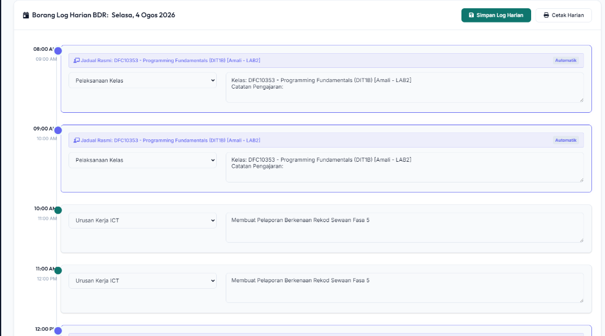
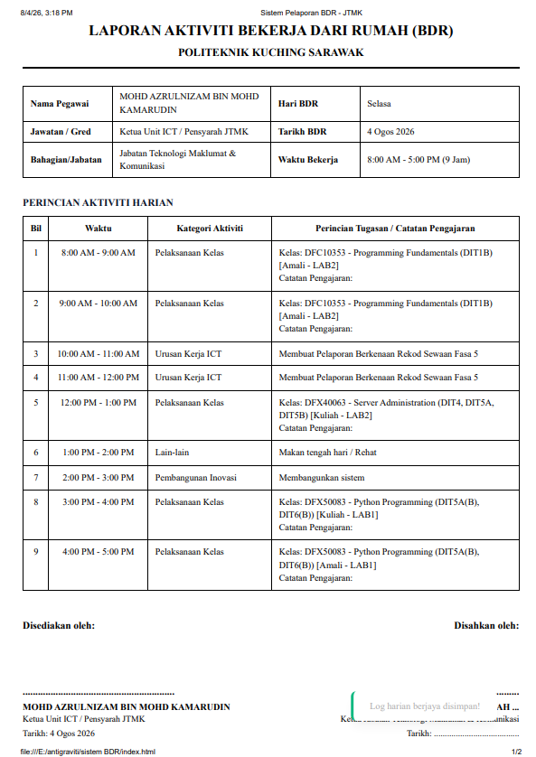
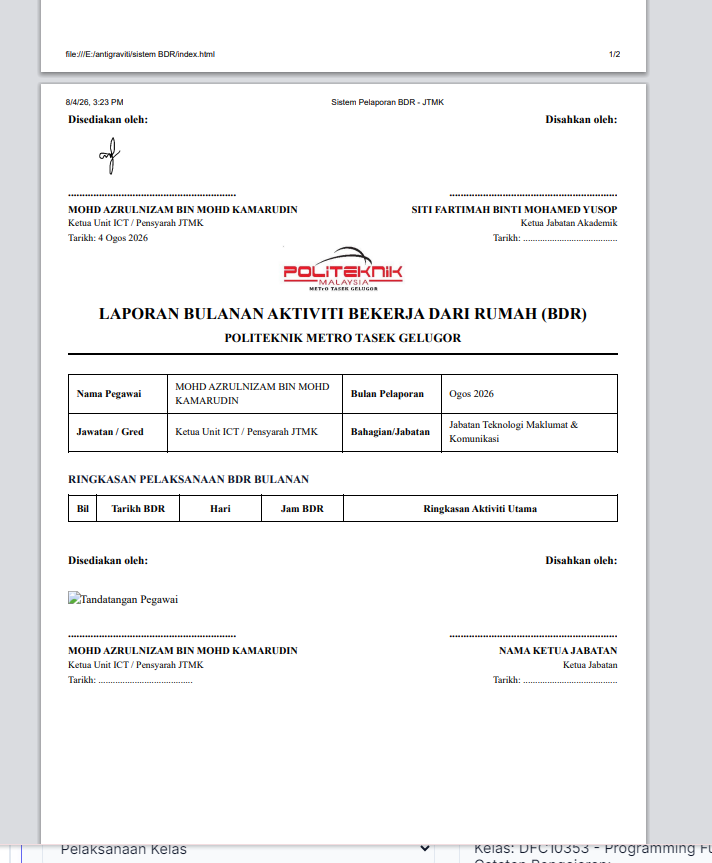

1. Pengenalan & Memulakan Sistem
Sistem HBH PMTG (Hari Bekerja Harian) dibina khusus untuk menyelaraskan catatan harian Bekerja Dari Rumah (BDR) bagi pensyarah dan kakitangan Politeknik METrO Tasek Gelugor pada setiap hari Selasa dan Khamis.
Sistem ini berfungsi secara Local-first di mana semua data yang dimasukkan disimpan secara selamat di dalam memori pelayar web (browser) komputer anda sendiri.
E:\antigraviti\sistem BDR dan klik fail run.bat. Sistem akan melancarkan pelayan mini dan membuka pelayar Chrome/Edge secara automatik.
2. Mengisi Profil, Peranan & Jadual Waktu
Sebelum memulakan pengisian log harian, anda perlu menetapkan profil peribadi, peranan kerja anda, serta memuat naik jadual waktu kuliah jika anda adalah seorang pensyarah:
2.1 Maklumat Peribadi & Tandatangan Digital
- Pergi ke tab Tetapan & T/Tangan pada menu tepi.
- Sahkan nama penuh (contoh: MOHD AZRULNIZAM BIN MOHD KAMARUDIN), jawatan, jabatan, dan nama Ketua Jabatan yang akan mengesahkan laporan anda.
- Klik butang Simpan Maklumat.
- Pada kotak tandatangan, lakar tandatangan anda menggunakan tetikus (mouse) atau skrin sentuh (touchscreen) dan klik **Simpan Tandatangan**. Ia akan disimpan secara kekal dan dimasukkan secara automatik ke dalam semua cetakan laporan.
2.2 Pilihan Peranan: Pensyarah vs Kakitangan Pentadbiran
- Di bawah bahagian Konfigurasi Peranan & Jadual Waktu BDR, terdapat pilihan kotak tick "Adakah anda Pensyarah?".
- Jika anda Pensyarah (Ditik): Sistem akan mengaktifkan slot jadual waktu kuliah automatik pada hari Selasa dan Khamis dalam log harian anda.
- Jika anda Kakitangan Pentadbiran (Nyah-tik): Sistem akan mematikan fungsi pengisian kelas automatik. Semua jam bekerja dari 8:00 AM - 5:00 PM akan dikosongkan untuk membolehkan pengisian log aktiviti pentadbiran biasa secara manual.
2.3 Muat Naik Jadual Waktu Kuliah (CSV / JPG / PDF)
Sistem ini menyokong muat naik fail jadual waktu dalam pelbagai format:
- Fail CSV (Auto-Detect): Klik butang **Muat Turun Templat CSV** untuk mendapatkan format lajur yang betul. Edit lajur mengikut kelas anda di Microsoft Excel, simpan sebagai CSV, dan muat naik. Sistem akan mengesan slot jam kuliah secara automatik.
- Gambar (JPG/PNG) atau PDF (Rujukan Visual): Jika anda memuat naik gambar jadual waktu atau fail PDF, sistem akan mengesan fail tersebut dan memaparkan satu **butang terapung "Rujukan Jadual Waktu"** di bucu bawah kanan Dashboard utama. Apabila butang tersebut diklik, fail jadual tersebut akan dipaparkan terus di dalam pop-up modal sistem untuk memudahkan rujukan anda semasa mengisi log harian.
2.4 Pembina & Editor Jadual Kuliah Secara Manual
Jika anda tidak mahu menggunakan kaedah fail muat naik, anda boleh membina dan mengubah suai jadual kuliah anda secara terus dalam sistem:
- Klik butang **Tunjukkan Pembina Jadual** di bawah ruangan edit secara manual.
- Satu grid input jam kuliah untuk hari **Selasa** dan **Khamis** (8:00 AM hingga 5:00 PM) akan dipaparkan.
- Taipkan butiran subjek, kelas, dan bilik pada slot jam yang berkenaan (contoh:
DFC10353 - Programming Fundamentals (DIT1B) [Amali - LAB2]), dan biarkan kosong bagi slot jam yang tiada kuliah. - Klik **Simpan Jadual Manual** untuk mengaktifkan jadual kuliah tersuai tersebut.
- Klik **Reset Jadual Asal** jika anda ingin memadam tetapan tersuai dan mengembalikan jadual waktu kepada jadual asal Mohd Azrulnizam.
3. Mengisi Catatan Harian BDR
Dashboard utama membolehkan anda mengisi dan menyimpan log aktiviti harian anda (waktu bekerja 8:00 AM - 5:00 PM):
- Pilih tarikh BDR harian anda pada ruangan Pilih Tarikh Catatan BDR (sistem menetapkan tarikh hari ini sebagai lalai).
- Jika tarikh yang dipilih ialah hari Selasa atau Khamis, jadual waktu kelas anda akan disuntik secara automatik pada slot jam yang betul. Anda hanya perlu menaip apa yang anda ajar pada ruangan catatan.
- Bagi jam-jam lain yang kosong, gunakan dropdown untuk memilih jenis tugasan (Urusan Kerja ICT, Urusan Penyediaan PdP, Pembangunan Inovasi, atau Lain-lain) dan masukkan catatan terperinci.
- Lampiran Bukti Setiap Jam (Pilihan): Di hujung setiap baris slot jam aktiviti, anda boleh memuat naik fail gambar bukti (PNG/JPG) atau video pendek (MP4/WebM) yang berukuran maksimum 2MB khusus untuk tugasan jam tersebut.
- Klik butang Simpan Log Harian di bucu kanan atas borang untuk menyimpan log. Lampiran bukti ini akan disertakan secara automatik di dalam baris aktiviti pada laporan bercetak!

4. Mencetak Laporan Harian BDR
Laporan harian dicetak mengikut format formal A4 rasmi institusi:
- Cara A (Terus dari Dashboard): Selepas mengisi dan menyimpan log, anda boleh terus menekan butang Cetak Harian di bucu kanan atas borang.
- Cara B (Melalui tab Rekod & Cetakan): Pilih tarikh laporan pada ruangan Pilih Tarikh Harian, kemudian klik butang Cetak Laporan Harian.
- Pelayar web anda akan membuka dialog cetakan. Anda boleh mencetak terus ke kertas atau menyimpan sebagai Save as PDF.

5. Mencetak Laporan Bulanan Lengkap
Laporan bulanan menyatukan helaian ringkasan bulanan (summary sheet) dan semua laporan harian bagi bulan tersebut ke dalam satu fail cetakan:
- Pergi ke tab Rekod & Cetakan.
- Di bawah bahagian **Cetakan Laporan Bulanan**, pilih bulan dan tahun pelaporan (contoh:
Ogos 2026). - Sistem akan memaparkan bilangan hari BDR yang telah direkodkan. Klik **Cetak Laporan Bulanan**.
- Sistem akan menjana satu dokumen komprehensif mengandungi halaman ringkasan bulanan di bahagian depan, diikuti lampiran helaian harian bagi setiap tarikh tersebut (dipisahkan secara halaman baharu menggunakan page-break).

6. Migrasi Data (Eksport / Import) Pejabat ke Rumah
Oleh kerana sistem ini menyimpan data secara setempat, anda perlu menggunakan fungsi eksport/import untuk memindahkan data catatan anda jika anda bertukar komputer (cth: dari PC pejabat ke laptop rumah):
- Langkah 1 (Eksport dari Pejabat): Pada PC pejabat anda, pergi ke tab **Rekod & Cetakan**. Klik butang **Eksport Data** di sebelah kanan atas. Fail sandaran berformat
.jsonakan dimuat turun. Salin fail ini ke dalam pendrive anda bersama-sama foldersistem BDR. - Langkah 2 (Import di Rumah): Buka fail
run.batdi PC rumah anda. Pergi ke tab **Rekod & Cetakan** dan klik butang **Import Data**. Pilih fail.jsonyang dibawa tadi. Semua catatan dan tandatangan anda akan dipulihkan secara automatik!
7. Panduan Cetak A4 / PDF Kemas
Untuk memastikan hasil cetakan kertas atau fail PDF anda kelihatan profesional dan tidak terpotong, pastikan tetapan dialog cetakan pelayar (Chrome/Edge/Firefox) diatur seperti berikut:
- Destinasi (Destination): Pilih pencetak fizikal anda atau Save as PDF / Microsoft Print to PDF untuk memuat turun dokumen.
- Saiz Kertas (Paper Size): Pastikan saiz dipilih adalah A4.
- Margin (Margins): Pilih Default (atau tetapkan kepada Minimum jika teks kelihatan terlalu rapat dengan sempadan kertas).
- Skala (Scale): Pilih 100% (atau klik Fit to page).
- Pengepala & Kaki (Headers and Footers): Nyah-tanda (Uncheck) pilihan ini untuk menghilangkan cetakan URL web dan tarikh sistem di bahagian atas & bawah bucu kertas cetakan anda agar kelihatan kemas.
- Grafik Latar Belakang (Background graphics): Tanda (Check) pilihan ini untuk membolehkan garisan lorekan lembut pada jadual dipaparkan.